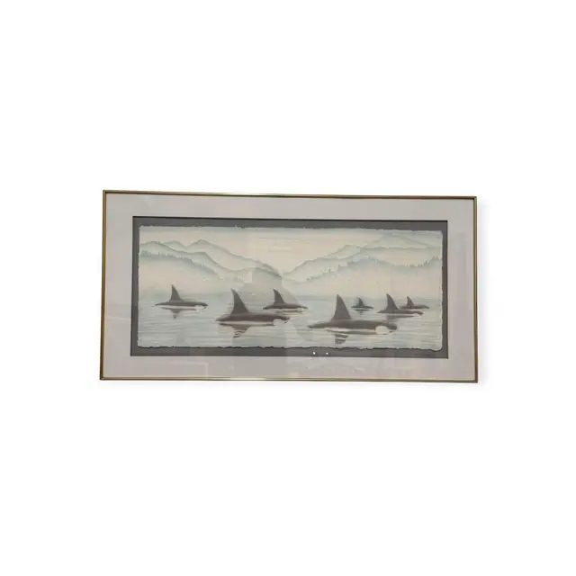
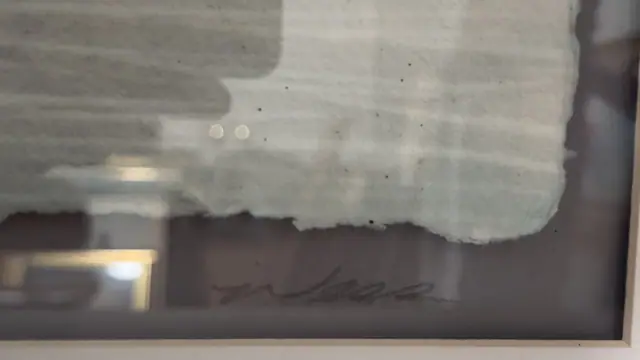
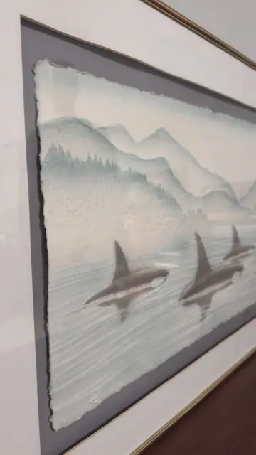
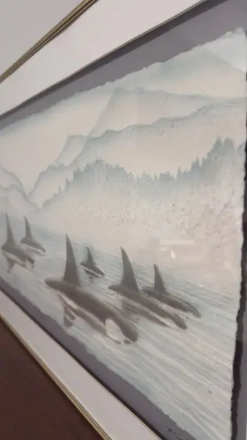

Paintings & Prints
Orca Pod Watercolour on Deckle-Edged Handmade Paper, Signed, Framed
Unknown · late 20th century
Price Upon Request




About the Item
A wide panoramic image in the softest of palettes: tall black dorsal fins and glossy grey-black backs break a mirror-flat sea, with pale reflections dropping beneath them, while behind rise layer upon layer of blue-grey conifer ridges and a snowy summit dissolving into mist. Everything is built from delicate graded washes with almost no hard edge - the far mountains are barely more than a tint. The sheet has ragged deckled edges on all four sides and is float-mounted on a grey mat so the deckle shows. Medium: watercolour on handmade paper. Signed on the grey mat below the sheet, right of centre, in pencil. Condition: Two small white spots/losses on the grey mat just below the sheet; sheet itself clean with intact deckle edges; strong glass reflections in every view.
Details
- Creator:
- Unknown
- Creation Year:
- late 20th century
- Dimensions:
- Height: 20.75 in (52.7 cm)
Width: 40.75 in (103.5 cm)
outside of frame - Medium:
- watercolour on handmade paper
- Period:
- 20Th
- Condition:
- Offered in the condition shown in the photographs.
- Reference Number:
- VO-108
- Documentation:
- no certificate or label photographed